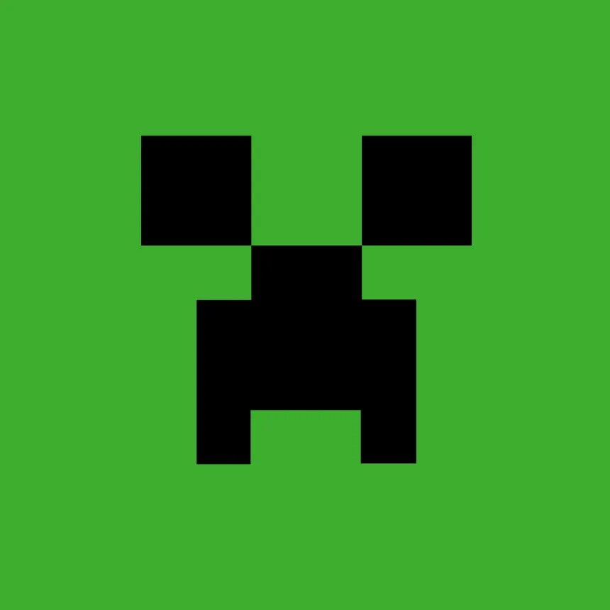

Challenge rule: reproduce the Creeper's head using HTML and CSS.
Difficulty :
Step 1: Planning the challenge
The rule was to create. Here is a guide to build all the necessary steps for creating the Creeper's head with
HTML blocks and CSS design. Start with a basic green squar.
Step 2: Desired result and what I achieved

Step 3: Here are the results of the code
Step 4: For the final step, here is the corrected version.